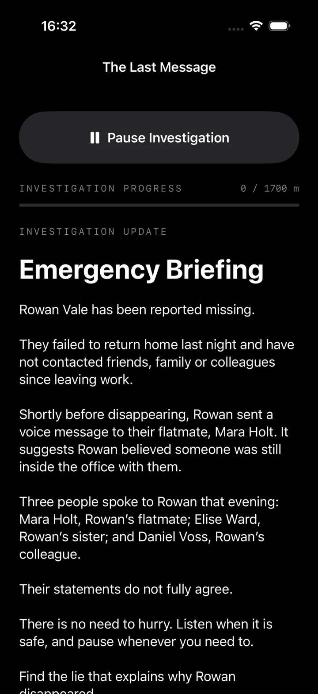

First investigation
The Last Message
A complete walking mystery designed to unfold gradually while you move. The public site keeps the details where they belong: inside the investigation.
Walking investigation for iPhone
Put on your headphones. Start the investigation. As you move through the real world, messages, evidence and new developments move the case forward.
The Missing Walk is not yet publicly available. The App Store link will appear here when release access is in place.
Inside the investigation
The interface is deliberately quiet while you move. Distance advances the investigation, brief updates arrive when they matter, and the phone can stay out of your hand for much of the walk.

The experience
There is no route to follow and no destination to reach. Choose somewhere suitable to walk, begin the case and let distance control the pace of the story.
Receive the opening briefing, understand the case and begin walking when you are ready.
Walking distance advances the investigation. Updates arrive as you move, so the phone can stay out of your hand for much of the experience.
Messages, evidence and investigative choices build towards a final accusation, reconstruction and resolution.
First investigation
A complete walking mystery designed to unfold gradually while you move. The public site keeps the details where they belong: inside the investigation.
Location, with a purpose
The Missing Walk uses location permission so the app can measure walking progress and trigger the investigation at the intended pace. It is not a route-navigation experience and does not require you to visit predetermined places.
For iPhone
The App Store call to action is deliberately inactive until the game is genuinely available.